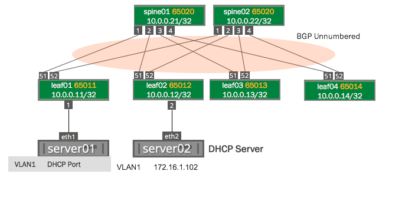

Configuring DHCP Relays
You can configure DHCP relays for IPv4 and IPv6.
To run DHCP for both IPv4 and IPv6, initiate the DHCP relay once for IPv4 and once for IPv6. Following are the configurations on the server hosts, DHCP relay and DHCP server using the following topology:

The dhcpd and dhcrelay services are disabled by default. After you finish configuring the DHCP relays and servers, you need to start those services.
Contents
Configuring IPv4 DHCP Relays
Configure isc-dhcp-relay using NCLU, specifying the IP addresses to each DHCP server and the interfaces that are used as the uplinks.
In the examples below, the DHCP server IP address is 172.16.1.102, VLAN 1 (the SVI is vlan1) and the uplinks are swp51 and swp52.
You configure a DHCP relay on a per-VLAN basis, specifying the SVI, not the parent bridge — in our example, you would specify vlan1 as the SVI for VLAN 1; do not specify the bridge named bridge in this case.
As per RFC 3046, you can specify as many server IP addresses that can fit in 255 octets, specifying each address only once.
cumulus@leaf01:~$ net add dhcp relay interface swp51cumulus@leaf01:~$ net add dhcp relay interface swp52cumulus@leaf01:~$ net add dhcp relay interface vlan1cumulus@leaf01:~$ net add dhcp relay server 172.16.1.102cumulus@leaf01:~$ net pendingcumulus@leaf01:~$ net commitThese commands create the following configuration in the /etc/default/isc-dhcp-relay file:
cumulus@leaf01:~$ cat /etc/default/isc-dhcp-relaySERVERS="172.16.1.102"INTF_CMD="-i vlan1 -i swp51 -i swp52"OPTIONS=""After you've finished configuring the DHCP relay, restart then enable the dhcrelay service so the configuration persists between reboots:
cumulus@leaf01:~$ sudo systemctl restart dhcrelay.servicecumulus@leaf01:~$ sudo systemctl enable dhcrelay.serviceTo see the status of the DHCP relay, use the systemctl status dhcrelay.service command:
cumulus@leaf01:~$ sudo systemctl status dhcrelay.service● dhcrelay.service - DHCPv4 Relay Agent Daemon Loaded: loaded (/lib/systemd/system/dhcrelay.service; enabled) Active: active (running) since Fri 2016-12-02 17:09:10 UTC; 2min 16s ago Docs: man:dhcrelay(8) Main PID: 1997 (dhcrelay) CGroup: /system.slice/dhcrelay.service └─1997 /usr/sbin/dhcrelay --nl -d -q -i vlan1 -i swp51 -i swp52 172.16.1.102Configuring IPv6 DHCP Relays
If you're configuring IPv6, the /etc/default/isc-dhcp-relay6 variables file has a different format than the /etc/default/isc-dhcp-relay file for IPv4 DHCP relays. Make sure to configure the variables appropriately by editing this file.
You cannot use NCLU to configure IPv6 relays.
cumulus@leaf01:$ sudo nano /etc/default/isc-dhcp-relay6 SERVERS=" -u 2001:db8:100::2%swp51 -u 2001:db8:100::2%swp52"INTF_CMD="-l vlan1"After you've finished configuring the DHCP relay, save your changes, restart the dhcrelay6 service, then enable the dhcrelay6 service so the configuration persists between reboots:
cumulus@leaf01:~$ sudo systemctl restart dhcrelay6.servicecumulus@leaf01:~$ sudo systemctl enable dhcrelay6.serviceTo see the status of the IPv6 DHCP relay, use the systemctl status dhcrelay6.service command:
cumulus@leaf01:~$ sudo systemctl status dhcrelay6.service● dhcrelay6.service - DHCPv6 Relay Agent Daemon Loaded: loaded (/lib/systemd/system/dhcrelay6.service; disabled) Active: active (running) since Fri 2016-12-02 21:00:26 UTC; 1s ago Docs: man:dhcrelay(8) Main PID: 6152 (dhcrelay) CGroup: /system.slice/dhcrelay6.service └─6152 /usr/sbin/dhcrelay -6 --nl -d -q -l vlan1 -u 2001:db8:100::2 swp51 -u 2001:db8:100::2 swp52Configuring the DHCP Relay Service Manually (Advanced)
By default, Cumulus Linux configures the DHCP relay service automatically. However, in older versions of Cumulus Linux, you needed to edit the dhcrelay.service file as described below. The IPv4 dhcrelay.service Unit script calls /etc/default/isc-dhcp-relay to find launch variables.
cumulus@switch:~$ cat /lib/systemd/system/dhcrelay.service [Unit]Description=DHCPv4 Relay Agent DaemonDocumentation=man:dhcrelay(8)After=network-oneline.target networking.service syslog.service[Service]Type=simpleEnvironmentFile=-/etc/default/isc-dhcp-relay# Here, we are expecting the INTF_CMD to contain# the -i for each interface specified,# e.g. "-i eth0 -i swp1"ExecStart=/usr/sbin/dhcrelay -d -q $INTF_CMD $SERVERS $OPTIONS[Install]WantedBy=multi-user.targetThe /etc/default/isc-dhcp-relay variables file needs to reference both interfaces participating in DHCP relay (facing the server and facing the client) and the IP address of the server. If the client-facing interface is a bridge port, specify the switch virtual interface (SVI) name if using a VLAN-aware bridge (for example, vlan100), or the bridge name if using traditional bridging (for example, br100).
Troubleshooting the DHCP Relays
If you are experiencing issues with the DHCP relay, you can run the following commands to determine whether or not the issue is with systemd. The following commands manually activate the DHCP relay process, and they do not persist when you reboot the switch:
cumulus@switch:~$ /usr/sbin/dhcrelay -4 -i <interface_facing_host> <ip_address_dhcp_server> -i <interface_facing_dhcp_server>cumulus@switch:~$ /usr/sbin/dhcrelay -6 -l <interface_facing_host> -u <ip_address_dhcp_server>%<interface_facing_dhcp_server>For example:
cumulus@leaf01:~$ /usr/sbin/dhcrelay -4 -i vlan1 172.16.1.102 -i swp51cumulus@leaf01:~$ /usr/sbin/dhcrelay -6 -l vlan1 -u 2001:db8:100::2%swp51See man dhcrelay for more information.
Looking at the Log on Switch where DHCP Relay Is Configured
Use the journalctl command to look at the behavior on the Cumulus Linux switch that is providing the DHCP relay functionality:
cumulus@leaf01:~$ sudo journalctl -l -n 20 | grep dhcrelayDec 05 20:58:55 leaf01 dhcrelay[6152]: sending upstream swp52Dec 05 20:58:55 leaf01 dhcrelay[6152]: sending upstream swp51Dec 05 20:58:55 leaf01 dhcrelay[6152]: Relaying Reply to fe80::4638:39ff:fe00:3 port 546 down.Dec 05 20:58:55 leaf01 dhcrelay[6152]: Relaying Reply to fe80::4638:39ff:fe00:3 port 546 down.Dec 05 21:03:55 leaf01 dhcrelay[6152]: Relaying Renew from fe80::4638:39ff:fe00:3 port 546 going up.Dec 05 21:03:55 leaf01 dhcrelay[6152]: sending upstream swp52Dec 05 21:03:55 leaf01 dhcrelay[6152]: sending upstream swp51Dec 05 21:03:55 leaf01 dhcrelay[6152]: Relaying Reply to fe80::4638:39ff:fe00:3 port 546 down.Dec 05 21:03:55 leaf01 dhcrelay[6152]: Relaying Reply to fe80::4638:39ff:fe00:3 port 546 down.You can run the command journalctl command with the --since flag to specify a time period:
cumulus@leaf01:~$ sudo journalctl -l --since "2 minutes ago" | grep dhcrelayDec 05 21:08:55 leaf01 dhcrelay[6152]: Relaying Renew from fe80::4638:39ff:fe00:3 port 546 going up.Dec 05 21:08:55 leaf01 dhcrelay[6152]: sending upstream swp52Dec 05 21:08:55 leaf01 dhcrelay[6152]: sending upstream swp51